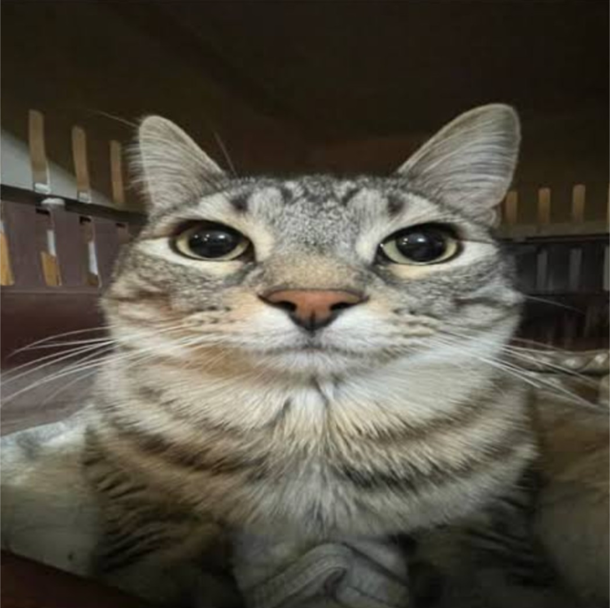

Hi, I’m James.
I’m a computer science student, aspiring game designer, and developer who enjoys building work that feels effortless to use. I move between game design, interface design, and code, so ideas don’t get lost on the way to launch.
Away from the screen, I create digital art, experiment with 2D animation, and take time to brew a careful cup of coffee.
- Product design
- Design systems
- Python, Java, C#, C++
- Game design
- HTML, CSS, JavaScript
- Unity, Unreal Engine
Where I’ve worked
- 2026 – now
Project 1
Currently I dont have a project
- 2024 – 2025
Project 3
This is only tentative
- 2023 – 2024
Project 2
hehe